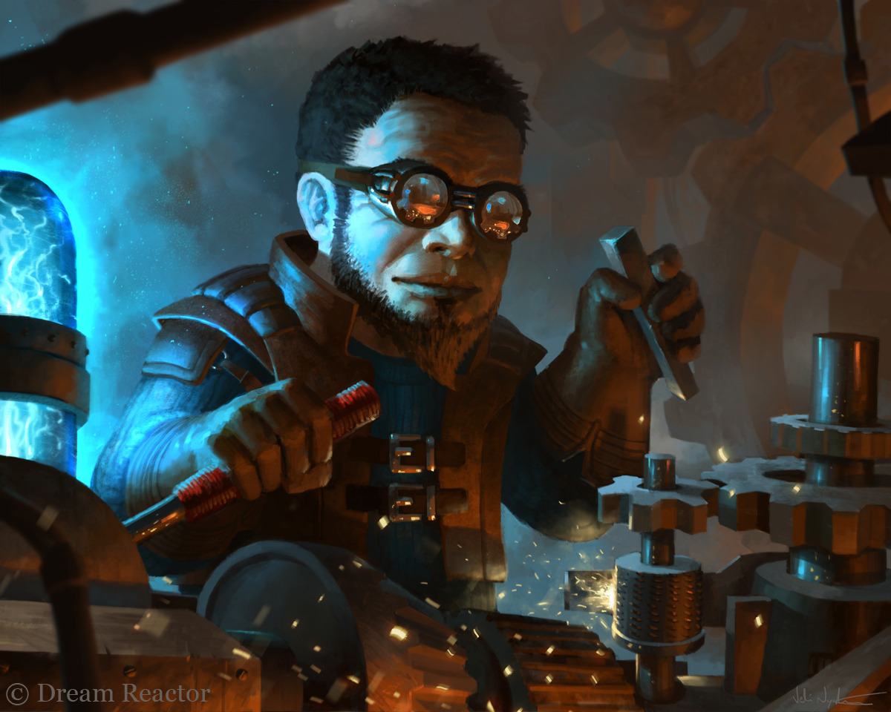

Toji
Melih Çağan ARI tarafından canlandırılmış ve oynanmıştır. Melih'in ilk ve tek karakteridir. Toji Verdun bölgesi yakınlarındaki ormanlık alanda doğmuş, hayatının büyük bir kısmını Underdark'ta Yakut şehrinde geçirmiş bir Forest Gnome'dur. Ailesi sıradan gnomelardı, fakat Toji diğer gnomelardan farklı çalışan bir zihine sahipti. Toji doğuştan yetenekliydi ve ailesi onun bu potansiyelinin heba olmaması için, Yakut Şehri'ndeki bir hocanın yanına çırak olarak verdi. Çıraklık evresini bitirdikten sonra Beyaz Şehir'e gitmeye karar vermiştir ve Beyaz Şehir'de daha fazla kaynak bulabileceğini düşünerek orada kendi icadını geliştirmeye başlamıştır. Yılların birikimi ve üstüne gelişimi ile birlikte kendine Demirden bir Golem yaptı ve ona Tehlike ismini verdi. Tehlike, normal yaratımlardan ziyade, zaman ile güçlenebilecek bir potansiyeldeydi ve normal golemlerden daha akıllıydı, öğrenme potansiyeli olan bir golemdi. Tehlike'nin hayata gekmesi ile Toji, temelde iki şey istiyordu; ilk olarak hem kendi zevkleri hem de Tehlike'ye güç vermesi adına, ikincil olarak da Tehlike'nin deneyimlenerek öğrenmesini istediği için maceralara atılmaya karar verdi. Bu noktada da macerasına Zonthar adındaki kimsenin gitmek istemediği bir yerde, daha fazla değerli mücevher bulabileceğine inanarak, o lokasyonda başlamaya karar verdi.
Toji Zonthar'a geldiğinde kalacak bir taverna ararken, daha sonrasında "Carpe Diem" adını alacak olan o grupla tanıştı. Grup ile kendi değerlerini tartarak bir tartışma yürüttü ve onlara bulacağı mücevherler karşılığında yardım edebileceğini söyledi. Grup ile birlikte olmaya karar verdikten sonra, birlikte birçok badireler atlatmışlardır; goblinler ile savaşmışlar, insanları kurtarmışlar, Zonthar'ın iç meselelerini çözmede yardım olmuşlardır ve grup içi dramalara bile şahit olmuşlardır. Bu dramalardan en garibi ve en etkilisi Tanrıların Huzurunda Dövüş İle Yargılanma mevzusu olmuştur. Uther adındaki savaşçı rahip Ruven adındaki grup arkadaşı olan bir Warlock'u öldürebilmek için ona kumpas kurmuş, ve kutsal bir dövüşte iki Warlock'un savaşmasına izin vermiş ve vesile olmuştu. Daha sonrasında ise Toji, Tehlike ve diğer grup üyeleri Ruven'i kurtarmak için bu savaşın sonrasında onu takip eden, Menzher'in katili olan Kreber Yağmurmızrağı adındaki adamı, Ruven'i öldürmeye çalıştığı için öldürmüşlerdir. Fakat bu olaylardan sonra bir kutlama yaşanmış olsa da, Toji'nin zihninde bir şeyler değişmeye başlamış ve yavaştan güvenmeye başladığı bu adamlara karşı dikkatli bir bakış açısı geliştirmesine sebep olmuştu.
Toji, gruba katıldığından beri, özellikle Damian ve John tarafından hor görülmüş ve bir eğlence materyali olarak kullanılmıştır. Belli noktada onu herhangi bir şekilde şakayla karışık veya gerçek olacak şekilde aşağılamamış tek kişi Ruven olmuştur, bu yüzden en iyi Ruven ile arkadaş olmuş, Tehlike ile oyun oynamasına izin vermiştir. Bu dramatik ve sansasyonel olaylardan sonra farklı goblin maceralarına çıkmaya ve goblinler ile savaşmaya devam etmişlerdir. Fakat en son çıktıkları seferde; Uther'in bir Ogre'ye ölmesi neticesiyle, grup içindeki iç çatışmaların patlak göstermesiyle ve gelecek olan goblin kuşatmasının boyutunun beklenenden daha büyük olduğunu anlaması ile birlikte Toji, burada geçirdiği sürenin anlamsız olacağına karar verdi ve artık bu noktadan sonra verilebilecek kayıpların potansiyel büyüklükleri göz önüne alındığında elde edilebilecek potansiyel hazinenin, hayatlarını bu denli tehlikeye atmalarına değmeyeceğine karar vermiştir. Bu sebeple Daynore'nin karşısına çıkıp kendince rasyonel gördüğü sebepleri anlatarak gruptak ayrılıp Beyaz Şehir'e döneceğini söylemiştir. Daynore ile girdikleri alevli tartışmanın kavgaya dönmesiyle birlikte ve Daynore tarafından aşağılanmayı gururuna yedirememesi ile birlikte gruptan ayrılmış ve Zonthar macerasına bir son vermiştir.
Toji Carpe Diem'den resmi olarak ayrılmıştır ve maceracılık hayatından emekli olmuştur. Bu noktadan sonra ise, şu ana kadar Zonthar'da topladığı parayı ve değerli mücevherleri, zaman içerisinde çok iyi birer yatırıma çevirerek zengin olmuş ve kendi demirci dükkanını açmıştır. İmparatorluk tarafından hünerleri tanınmış ve sponsorlanmıştır. Yıllar içerisinde de İmparatorluğun işine yarayacak birçok buluşta da yardımcı bir faktör olmuş, Beyaz Şehir ve İmparatorluk içerisinde saygın bir kişilik edinmiş ve varlıklı bir hayat sürmeye devam etmiştir.
Toji ismi, tarih sayfalarına geçmemiştir. İsim olarak Carpe Diem'in daha önceki bir üyesi olduğu bilinse de, Tanrı Anıtları'nda kazınmış bir ismi bulunmamaktadır. Fakat Toji adına İmparatorluk'ta bulunabilecek bir sürü resmi kaynak mevcuttur. Buluşları ve hayatı, büyücülük akademisinde ders kitaplarında yer alıyordur. İmparatorluğa kattığı değer niteliğinde, yaşamış en verimli Gnomelardan birisidir.